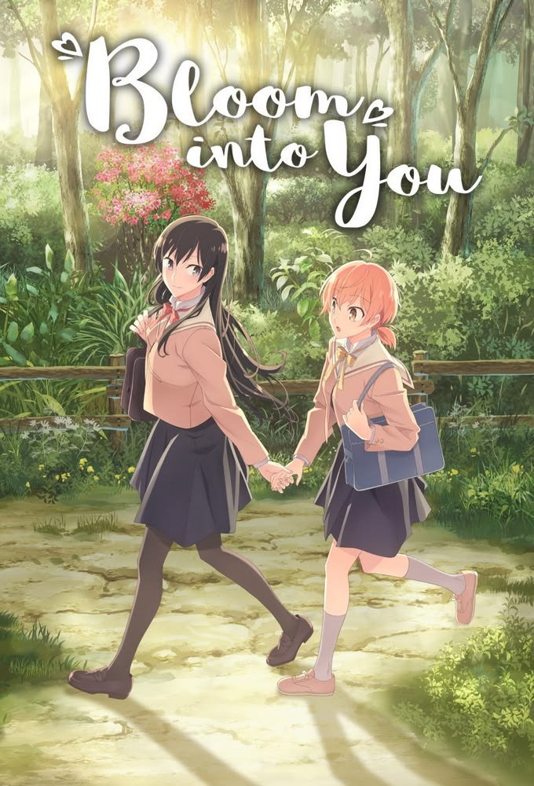

Obra Maestra Destacada
Bloom Into You Yagate Kimi ni Naru
Yuu Koito siempre ha soñado con experimentar el amor tal como lo describen los mangas shojo, pero al recibir su primera confesión no siente absolutamente nada.

Catálogo Esencial Yuri
Creador del Proyecto
Sobre mí y Lirio & Romance
¡Hola! Este espacio fue creado con muchísima pasión, dedicación y cariño por Sen. La idea nació con el propósito de construir un refugio digital elegante, limpio y acogedor para todos los amantes del género Girls' Love (Yuri), ofreciendo una experiencia de lectura y visualización impecable sin distracciones.